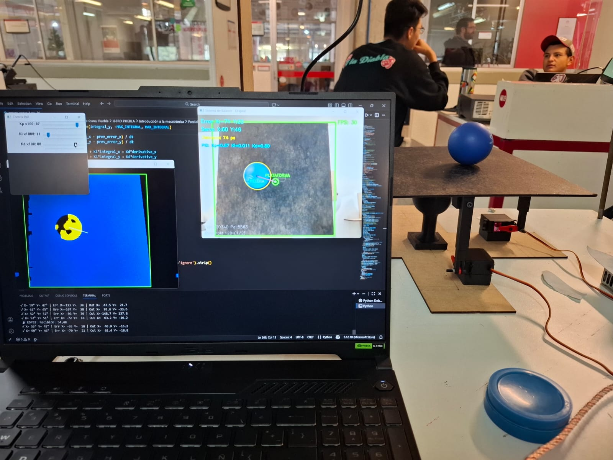
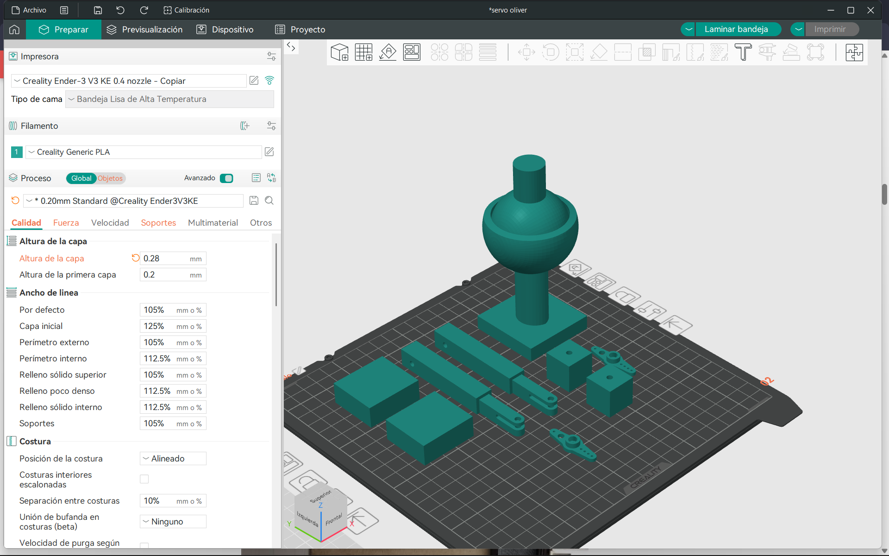
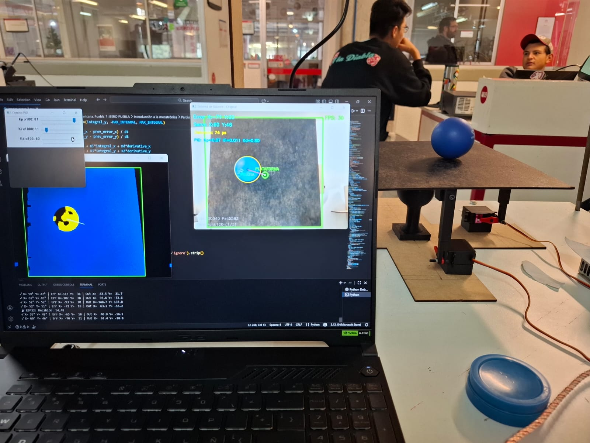
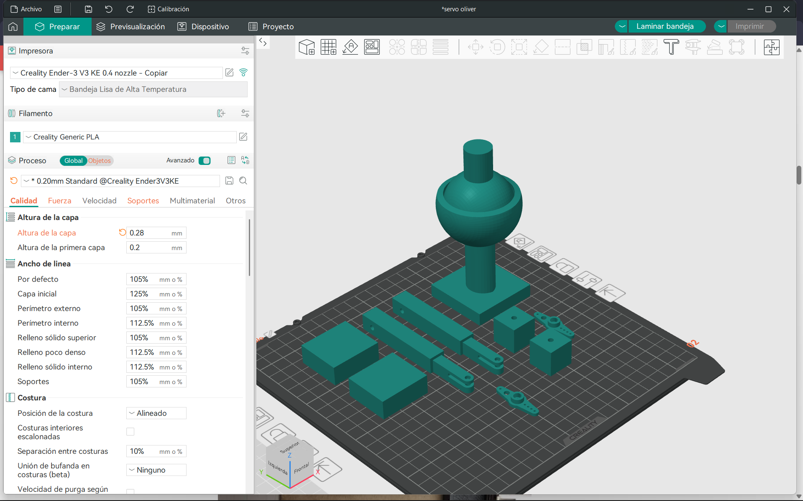

Robot con Visión por Computadora y Control PID
Descripción General
Este proyecto consiste en un robot balanceador con plataforma móvil, controlado mediante visión por computadora (OpenCV) y estabilizado con dos servomotores MG996R. El sistema detecta una pelota azul sobre una plataforma negra y ajusta la inclinación mediante un control PID en tiempo real.
El robot fue construido utilizando:
- 2 servomotores MG996R de 15 kg
- Estructura y articulaciones impresas en 3D
- Plataforma de MDF
- ESP32 con comunicación por Bluetooth
- Python + OpenCV para visión por computadora
Autores
- Eduardo Salamanca
- Juan Carlos Pérez
- André Sánchez
- Sebastián Sánchez
Características Principales
- Detección de plataforma negra mediante segmentación HSV.
- Detección de pelota azul y cálculo preciso del centro.
- Control PID ajustable en tiempo real mediante sliders en OpenCV.
- Comunicación serial Bluetooth con ESP32.
- Movimientos suaves gracias a filtros y suavizado.
Videos de funcionamiento
Demostración del sistema detectando la pelota, calculando la posición y moviendo los servomotores en tiempo real.
Hardware Utilizado
| Componente | Cant. | Nota |
|---|---|---|
| Servomotor MG996R | 2 | 15 kg torque |
| ESP32 | 1 | Control y comunicación |
| Plataforma MDF | 1 | Soporte físico |
| Base de servos MDF | 1 | Soporte físico |
| Piezas impresas en 3D | 4+ | Articulaciones y brazos |
| Plataforma MDF | 1 | Soporte físico |
Software Utilizado
- Python 3.10+
- OpenCV
- NumPy
- PySerial
- Arduino IDE
Funcionamiento
1. Detección de Plataforma
Se segmenta el área negra mediante un threshold en HSV:
python lower_black = np.array([0, 0, 0]) upper_black = np.array([180, 255, THRESHOLD_PLATAFORMA])
Se obtiene el contorno más grande y su centro.
2. Detección de Pelota Azul
python LOW_BLUE = np.array([100, 150, 70]) HIGH_BLUE = np.array([130, 255, 255])
Se calcula centro y radio para validar detección.
3. Cálculo de Error
python error_x = centro_pelota.x - centro_plataforma.x error_y = centro_pelota.y - centro_plataforma.y
4. Control PID
python output_x = Kperror_x + Kiintegral_x + Kd*derivative_x
Sliders en OpenCV permiten ajustar Kp, Ki y Kd.
5. Envío al ESP32
python mensaje = f"{int(current_x)},{int(current_y)}\n" esp32.write(mensaje.encode())
Mecánica
 



Códigos
Python (Visión por Computadora)
python
import cv2 import time import numpy as np import serial import serial.tools.list_ports
Configuración Serial Bluetooth
esp32_port = 'COM3'
baud_rate = 115200
print("=" * 50)
print("Intentando conectar con ESP32...")
print(f"Puerto: {esp32_port} | Baudios: {baud_rate}")
def listar_puertos():
puertos = serial.tools.list_ports.comports()
print("\n Puertos COM disponibles:")
if len(puertos) == 0:
print(" No se encontraron puertos COM")
for puerto in puertos:
print(f" • {puerto.device}: {puerto.description}")
print()
listar_puertos()
try:
esp32 = serial.Serial(esp32_port, baud_rate, timeout=1)
time.sleep(2)
print(f" ¡Conectado al ESP32 en {esp32_port}!")
except serial.SerialException as e:
print(f" Error de conexión serial: {e}")
print("\n Posibles soluciones:")
print(" 1. Verifica que el puerto COM sea correcto")
print(" 2. Cierra el IDE de Arduino si está abierto")
print(" 3. Cierra cualquier monitor serial activo")
print(" 4. Desconecta y reconecta el ESP32")
print(" 5. Verifica que el ESP32 esté encendido")
esp32 = None
except Exception as e:
print(f" Error inesperado: {e}")
esp32 = None
print("=" * 50)
Configuración cámara
cap = cv2.VideoCapture(1)
cap.set(cv2.CAP_PROP_FRAME_WIDTH, 640)
cap.set(cv2.CAP_PROP_FRAME_HEIGHT, 480)
if not cap.isOpened():
print("Error: No se pudo abrir la cámara")
exit()
Posición inicial servos
center_angle = 50
current_x = center_angle
current_y = center_angle
DEAD_ZONE = 15 # Zona muerta reducida
smoothing = 0.3 # Suavizado reducido para respuesta más rápida
Parámetros PID ajustables
Kp = 0.15
Ki = 0.001
Kd = 0.20
prev_error_x = 0
prev_error_y = 0
integral_x = 0
integral_y = 0
MAX_INTEGRAL = 50
Parámetros de detección
# Threshold para plataforma NEGRA (0-255, valor V en HSV)
THRESHOLD_PLATAFORMA = 120 # Ampliado para detectar más tonos
AREA_MIN_PLATAFORMA = 1000 # Área mínima del cuadrado
# Rango HSV para pelota azul
LOW_BLUE = np.array([100, 150, 70])
HIGH_BLUE = np.array([130, 255, 255])
AREA_MIN_PELOTA = 200
RADIO_MIN_PELOTA = 8
Función para limitar valores
Callbacks para sliders
def update_kp(val):
global Kp
Kp = val / 100.0 # Slider 0-100, valor real 0.00-1.00
print(f"Kp = {Kp:.3f}")
def update_ki(val):
global Ki
Ki = val / 1000.0 # Slider 0-100, valor real 0.000-0.100
print(f"Ki = {Ki:.4f}")
def update_kd(val):
global Kd
Kd = val / 100.0 # Slider 0-100, valor real 0.00-1.00
print(f"Kd = {Kd:.3f}")
Crear ventana de control
cv2.namedWindow('Control PID')
cv2.createTrackbar('Kp x100', 'Control PID', int(Kp * 100), 100, update_kp)
cv2.createTrackbar('Ki x1000', 'Control PID', int(Ki * 1000), 100, update_ki)
cv2.createTrackbar('Kd x100', 'Control PID', int(Kd * 100), 100, update_kd)
prev_time = time.time()
print("=" * 50)
print("Sistema de Balance: Plataforma + Pelota")
print("=" * 50)
print("CONFIGURACIÓN:")
print(f" • Centro servos: {center_angle}° (Rango: 0-180°)")
print(f" • Zona muerta: ±{DEAD_ZONE} píxeles")
print(f" • Suavizado: {smoothing}")
print(f" • Threshold plataforma: {THRESHOLD_PLATAFORMA}")
print(f" • PID: Kp={Kp} Ki={Ki} Kd={Kd}")
print("\nDETECCIÓN:")
print(" • PLATAFORMA NEGRA (HSV): Detecta área más grande de tonos oscuros")
print(" • PELOTA AZUL: Posición para calcular error")
print(" • Usa teclas '1'/'2' para ajustar threshold")
print("\nCONTROLES:")
print(" • 'q' → Salir")
print(" • 'c' → Resetear integrales")
print(" • '1' → Threshold -5")
print(" • '2' → Threshold +5")
print(" • Sliders → Ajustar PID en tiempo real")
print("=" * 50)
frame_count = 0
fps_time = time.time()
fps = 0
while True:
ret, frame = cap.read()
if not ret:
print("Error: No se pudo leer frame de la cámara")
break
frame = cv2.flip(frame, 1)
height, width = frame.shape[:2]
centrox, centroy = width//2, height//2
DETECCIÓN 1: PLATAFORMA NEGRA (HSV) - ÁREA MÁS GRANDE
hsv_plat = cv2.cvtColor(frame, cv2.COLOR_BGR2HSV)
lower_black = np.array([0, 0, 0])
upper_black = np.array([180, 255, THRESHOLD_PLATAFORMA])
mask_plataforma = cv2.inRange(hsv_plat, lower_black, upper_black)
kernel_plat = np.ones((7,7), np.uint8)
mask_plataforma = cv2.morphologyEx(mask_plataforma, cv2.MORPH_CLOSE, kernel_plat)
mask_plataforma = cv2.morphologyEx(mask_plataforma, cv2.MORPH_OPEN, kernel_plat)
mask_plataforma = cv2.dilate(mask_plataforma, kernel_plat, iterations=1)
contours_plat, _ = cv2.findContours(mask_plataforma, cv2.RETR_EXTERNAL, cv2.CHAIN_APPROX_SIMPLE)
area_max_plat = 0
contorno_plat = None
centro_plataforma = None
rectangulo_info = None
for c in contours_plat:
area = cv2.contourArea(c)
if area > area_max_plat and area > AREA_MIN_PLATAFORMA:
area_max_plat = area
contorno_plat = c
rectangulo_info = cv2.minAreaRect(c)
M = cv2.moments(c)
if M["m00"] != 0:
cx_plat = int(M["m10"] / M["m00"])
cy_plat = int(M["m01"] / M["m00"])
centro_plataforma = (cx_plat, cy_plat)
```
### DETECCIÓN 2: PELOTA AZUL
```bash
hsv = cv2.cvtColor(frame, cv2.COLOR_BGR2HSV)
mask_pelota = cv2.inRange(hsv, LOW_BLUE, HIGH_BLUE)
kernel_pelota = np.ones((5,5), np.uint8)
mask_pelota = cv2.morphologyEx(mask_pelota, cv2.MORPH_OPEN, kernel_pelota)
mask_pelota = cv2.morphologyEx(mask_pelota, cv2.MORPH_CLOSE, kernel_pelota)
mask_pelota = cv2.dilate(mask_pelota, kernel_pelota, iterations=1)
contours_pelota, _ = cv2.findContours(mask_pelota, cv2.RETR_EXTERNAL, cv2.CHAIN_APPROX_SIMPLE)
area_max_pelota = 0
contorno_pelota = None
centro_pelota = None
radio_pelota = 0
for c in contours_pelota:
area = cv2.contourArea(c)
if area > area_max_pelota:
area_max_pelota = area
contorno_pelota = c
(x_pel, y_pel), radio_pelota = cv2.minEnclosingCircle(c)
if radio_pelota > RADIO_MIN_PELOTA and area > AREA_MIN_PELOTA:
centro_pelota = (int(x_pel), int(y_pel))
VISUALIZACIÓN
out_original = frame.copy()
mask_combinada = cv2.bitwise_or(mask_plataforma, mask_pelota)
out_deteccion = cv2.cvtColor(mask_combinada, cv2.COLOR_GRAY2BGR)
out_deteccion[mask_plataforma > 0] = [255, 0, 0]
out_deteccion[mask_pelota > 0] = [0, 255, 255]
CALCULAR TIEMPO
current_time = time.time()
dt = current_time - prev_time
prev_time = current_time
if dt < 0.001:
dt = 0.001
CONTROL PID - SOLO CAMBIO: ERROR X
plataforma_detectada = (contorno_plat is not None and area_max_plat > AREA_MIN_PLATAFORMA and centro_plataforma is not None)
pelota_detectada = (contorno_pelota is not None and centro_pelota is not None)
if plataforma_detectada:
if rectangulo_info:
box = cv2.boxPoints(rectangulo_info)
box = np.intp(box)
cv2.drawContours(out_original, [box], 0, (0, 255, 0), 3)
cv2.drawContours(out_deteccion, [box], 0, (0, 255, 0), 2)
cv2.circle(out_original, centro_plataforma, 12, (0, 255, 0), 3)
cv2.circle(out_original, centro_plataforma, 5, (0, 255, 0), -1)
cv2.putText(out_original, "PLATAFORMA", (centro_plataforma[0]-40, centro_plataforma[1]-20),
cv2.FONT_HERSHEY_SIMPLEX, 0.5, (0, 255, 0), 2)
if pelota_detectada:
cv2.circle(out_original, centro_pelota, int(radio_pelota), (0, 255, 255), 2)
cv2.circle(out_original, centro_pelota, 5, (255, 0, 0), -1)
cv2.putText(out_original, "PELOTA", (centro_pelota[0]-30, centro_pelota[1]+25),
cv2.FONT_HERSHEY_SIMPLEX, 0.5, (255, 255, 0), 2)
QQQ
cv2.line(out_original, centro_plataforma, centro_pelota, (255, 0, 255), 2)
cv2.line(out_deteccion, centro_plataforma, centro_pelota, (255, 255, 255), 2)
CALCULAR ERROR: Pelota respecto al centro de la plataforma
SOLO CAMBIO: X sin signo negativo
error_x = (centro_pelota[0] - centro_plataforma[0]) # CORREGIDO X
error_y = (centro_pelota[1] - centro_plataforma[1]) # Y sigue invertido
if abs(error_x) < DEAD_ZONE:
error_x = 0
if abs(error_y) < DEAD_ZONE:
error_y = 0
integral_x += error_x * dt
integral_y += error_y * dt
integral_x = constrain(integral_x, -MAX_INTEGRAL, MAX_INTEGRAL)
integral_y = constrain(integral_y, -MAX_INTEGRAL, MAX_INTEGRAL)
derivative_x = (error_x - prev_error_x) / dt
derivative_y = (error_y - prev_error_y) / dt
output_x = Kp*error_x + Ki*integral_x + Kd*derivative_x
output_y = Kp*error_y + Ki*integral_y + Kd*derivative_y
prev_error_x = error_x
prev_error_y = error_y
delta_x = output_x * 0.15
delta_y = output_y * 0.15
target_x = center_angle + delta_x
target_y = center_angle + delta_y
current_x = current_x * (1 - smoothing) + target_x * smoothing
current_y = current_y * (1 - smoothing) + target_y * smoothing
current_x = constrain(current_x, 0, 110)
current_y = constrain(current_y, 0, 110)
if esp32:
mensaje = f"{int(current_x)},{int(current_y)}\n"
try:
esp32.write(mensaje.encode())
if esp32.in_waiting > 0:
respuesta = esp32.readline().decode('utf-8', errors='ignore').strip()
if respuesta and frame_count % 30 == 0:
print(f"📡 ESP32: {respuesta}")
except Exception as e:
if frame_count % 30 == 0:
print(f"✗ Error: {e}")
if frame_count % 5 == 0:
print(f"✓ X={int(current_x):3d}° Y={int(current_y):3d}° | Err X={-error_x:4d} Y={-error_y:4d} | Out X={output_x:6.1f} Y={output_y:6.1f}")
cv2.putText(out_original, f"Error X:{-error_x} Y:{-error_y}", (10,30),
cv2.FONT_HERSHEY_SIMPLEX, 0.6, (255,255,0), 2)
cv2.putText(out_original, f"Servo X:{int(current_x)} Y:{int(current_y)}", (10,60),
cv2.FONT_HERSHEY_SIMPLEX, 0.6, (255,255,0), 2)
cv2.putText(out_original, f"Distancia: {int(np.sqrt(error_x**2 + error_y**2))} px", (10,90),
cv2.FONT_HERSHEY_SIMPLEX, 0.5, (0,255,255), 2)
else:
cv2.putText(out_original, "PELOTA NO DETECTADA", (10,30),
cv2.FONT_HERSHEY_SIMPLEX, 0.7, (0,165,255), 2)
integral_x = 0
integral_y = 0
prev_error_x = 0
prev_error_y = 0
current_x = current_x * (1 - smoothing*0.5) + center_angle * smoothing * 0.5
current_y = current_y * (1 - smoothing*0.5) + center_angle * smoothing * 0.5
if esp32 and frame_count % 10 == 0:
try:
esp32.write(f"{int(current_x)},{int(current_y)}\n".encode())
except:
pass
if frame_count % 30 == 0:
print(f" Solo plataforma. Centrando: X={int(current_x)}° Y={int(current_y)}°")
else:
cv2.putText(out_original, "PLATAFORMA NO DETECTADA", (10,30),
cv2.FONT_HERSHEY_SIMPLEX, 0.7, (0,0,255), 2)
integral_x = 0
integral_y = 0
prev_error_x = 0
prev_error_y = 0
current_x = current_x * (1 - smoothing*0.5) + center_angle * smoothing * 0.5
current_y = current_y * (1 - smoothing*0.5) + center_angle * smoothing * 0.5
if esp32 and frame_count % 10 == 0:
try:
esp32.write(f"{int(current_x)},{int(current_y)}\n".encode())
except:
pass
if frame_count % 30 == 0:
print(f" Sin detección. Centrando: X={int(current_x)}° Y={int(current_y)}°")
cv2.circle(out_original, (centrox, centroy), DEAD_ZONE, (128,128,128), 1)
cv2.line(out_original, (centrox-15, centroy), (centrox+15, centroy), (128,128,128), 1)
cv2.line(out_original, (centrox, centroy-15), (centrox, centroy+15), (128,128,128), 1)
cv2.putText(out_original, f"Plat:{int(area_max_plat)} Pel:{int(area_max_pelota)}", (10,height-40),
cv2.FONT_HERSHEY_SIMPLEX, 0.5, (200,200,200), 1)
cv2.putText(out_original, f"Threshold:{THRESHOLD_PLATAFORMA} (1/2)", (10,height-15),
cv2.FONT_HERSHEY_SIMPLEX, 0.5, (200,200,200), 1)
cv2.putText(out_original, f"PID: Kp={Kp:.2f} Ki={Ki:.3f} Kd={Kd:.2f}", (10,120),
cv2.FONT_HERSHEY_SIMPLEX, 0.5, (255,200,0), 2)
frame_count += 1
if time.time() - fps_time > 1.0:
fps = frame_count
frame_count = 0
fps_time = time.time()
cv2.putText(out_original, f"FPS: {fps}", (width-100, 30),
cv2.FONT_HERSHEY_SIMPLEX, 0.6, (0,255,0), 2)
cv2.imshow("Sistema de Balance - Original", out_original)
cv2.imshow("Deteccion: Plataforma(Azul) + Pelota(Amarillo)", out_deteccion)
key = cv2.waitKey(1) & 0xFF
if key == ord('q'):
break
elif key == ord('c'):
integral_x = 0
integral_y = 0
print("Integrales reseteadas")
elif key == ord('1'):
THRESHOLD_PLATAFORMA = max(10, THRESHOLD_PLATAFORMA - 5)
print(f"Threshold: {THRESHOLD_PLATAFORMA}")
elif key == ord('2'):
THRESHOLD_PLATAFORMA = min(250, THRESHOLD_PLATAFORMA + 5)
print(f"Threshold: {THRESHOLD_PLATAFORMA}")
print("\nCerrando sistema...")
cap.release()
if esp32:
esp32.write(f"{center_angle},{center_angle}\n".encode())
time.sleep(0.1)
esp32.close()
print("Conexión serial cerrada")
cv2.destroyAllWindows()
print("Sistema finalizado")
Código ESP32 / Arduino
cpp
#include <ESP32Servo.h>
// =============== CONFIGURACIÓN DE PINES ===============
const int PIN_SERVO_X = 18; // Servo que controla eje X (horizontal)
const int PIN_SERVO_Y = 19; // Servo que controla eje Y (vertical)
// =============== CONFIGURACIÓN DE SERVOS ===============
Servo servoX;
Servo servoY;
// Parámetros PWM para servos (ajustar según tu modelo)
const int PWM_MIN = 500; // Ancho de pulso mínimo en microsegundos
const int PWM_MAX = 2400; // Ancho de pulso máximo en microsegundos
// =============== POSICIÓN INICIAL ===============
const int CENTRO = 35; // Posición central (0-180 grados)
// =============== VARIABLES DE COMUNICACIÓN ===============
String inputString = ""; // Buffer para datos recibidos
bool stringComplete = false; // Bandera de comando completo
// =============== VARIABLES DE CONTROL ===============
int posicionX = CENTRO;
int posicionY = CENTRO;
unsigned long ultimoComando = 0;
const unsigned long TIMEOUT = 2000; // Timeout en ms (volver al centro si no hay datos)
// =============== CONFIGURACIÓN INICIAL ===============
void setup() {
// Iniciar comunicación serial
Serial.begin(115200);
// Reservar memoria para el buffer
inputString.reserve(20);
// Configurar servos con parámetros PWM personalizados
servoX.attach(PIN_SERVO_X, PWM_MIN, PWM_MAX);
servoY.attach(PIN_SERVO_Y, PWM_MIN, PWM_MAX);
// Mover a posición inicial centrada
servoX.write(CENTRO);
servoY.write(CENTRO);
// Esperar estabilización
delay(500);
// Mensaje de inicio
Serial.println("========================================");
Serial.println("ESP32 - Sistema de Balance de Pelota");
Serial.println("========================================");
Serial.println("Configuracion:");
Serial.print(" - Servo X en pin GPIO ");
Serial.println(PIN_SERVO_X);
Serial.print(" - Servo Y en pin GPIO ");
Serial.println(PIN_SERVO_Y);
Serial.print(" - Centro: ");
Serial.print(CENTRO);
Serial.println(" grados");
Serial.print(" - PWM: ");
Serial.print(PWM_MIN);
Serial.print("-");
Serial.print(PWM_MAX);
Serial.println(" us");
Serial.println("========================================");
Serial.println("Sistema listo. Esperando datos...");
Serial.println("Formato: X,Y (ejemplo: 90,85)");
Serial.println("========================================");
ultimoComando = millis();
}
// =============== BUCLE PRINCIPAL ===============
void loop() {
// Leer datos seriales disponibles
while (Serial.available()) {
char inChar = (char)Serial.read();
// Si es salto de línea, el comando está completo
if (inChar == '\n' || inChar == '\r') {
if (inputString.length() > 0) {
stringComplete = true;
}
} else {
// Agregar caracter al buffer
inputString += inChar;
}
}
// Procesar comando si está completo
if (stringComplete) {
procesarComando();
inputString = "";
stringComplete = false;
ultimoComando = millis();
}
// Timeout: volver al centro si no hay comandos recientes
if (millis() - ultimoComando > TIMEOUT) {
volverAlCentro();
ultimoComando = millis();
}
}
// =============== FUNCIÓN: PROCESAR COMANDO ===============
void procesarComando() {
// Buscar la coma separadora
int comaIndex = inputString.indexOf(',');
if (comaIndex > 0) {
// Extraer valores X e Y
String valorXStr = inputString.substring(0, comaIndex);
String valorYStr = inputString.substring(comaIndex + 1);
// Convertir a enteros
int xRecibido = valorXStr.toInt();
int yRecibido = valorYStr.toInt();
// Validar y limitar al rango 0-180
xRecibido = constrain(xRecibido, 0, 180);
yRecibido = constrain(yRecibido, 0, 180);
// Actualizar posiciones
posicionX = xRecibido;
posicionY = yRecibido;
// Mover servos
servoX.write(posicionX);
servoY.write(posicionY);
// Enviar confirmación a Python
Serial.print("Recibido: ");
Serial.print(posicionX);
Serial.print(",");
Serial.println(posicionY);
} else {
// Comando inválido (sin coma)
Serial.print("Error: Formato invalido '");
Serial.print(inputString);
Serial.println("'. Use: X,Y");
}
}
// =============== FUNCIÓN: VOLVER AL CENTRO ===============
void volverAlCentro() {
static bool mensajeMostrado = false;
// Movimiento suave hacia el centro
if (posicionX != CENTRO || posicionY != CENTRO) {
if (!mensajeMostrado) {
Serial.println("Timeout: Volviendo al centro...");
mensajeMostrado = true;
}
// Acercar gradualmente al centro
if (posicionX < CENTRO) posicionX++;
if (posicionX > CENTRO) posicionX--;
if (posicionY < CENTRO) posicionY++;
if (posicionY > CENTRO) posicionY--;
// Mover servos
servoX.write(posicionX);
servoY.write(posicionY);
delay(20); // Movimiento suave
} else {
mensajeMostrado = false;
}
}
Instalación y Uso
- Cargar el código en el ESP32.
- Ejecutar el script de Python.
- Verificar que la cámara detecte la plataforma.
- Ajustar parámetros PID con los sliders.
- Colocar la pelota sobre la plataforma.
- Observar la estabilización en tiempo real.
Conclusiones
- El robot utiliza visión artificial para estimar posición.
- El PID corrige la inclinación con alta precisión.
- La estructura mecánica y servos de alto torque permiten estabilidad.
- Se obtuvo un robot funcional capaz de mantener el equilibrio de una pelota.
Licencia
Proyecto académico desarrollado para fines educativos.